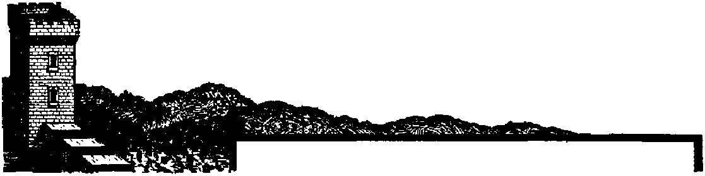
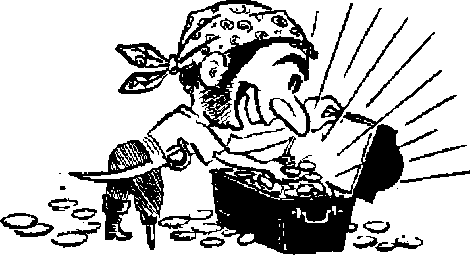
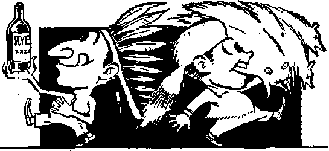
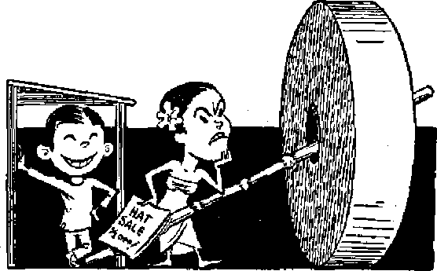

An objective look at its land and peoples
The East and the West and Catholicism swap blows in the political arena
How did Sunday become Christendom’s "holy day”?
Strange mediums of exchange, from small shells to two-ton millstones
JUNE 22, 1948 semimonthly
The mission of this journal
News sources that are able to keep you awake to the vital issues of our times must be unfettered by censorship and selfish interests. "Awake!” has no fetters. It recognizes facts, feces facts, is free to publish facts. It is not bound by political ambitions or obligations; it is unhampered by advertisers whose toes must not be trodden on; it is unprejudiced by traditional creeds. This journal keeps itself free that it may speak freely to you. But it docs not abuse its freedom. It maintains integrity to truth,
"Av/ake I” uses the regular news channels, but is not dependent on them. Its own correspondents are on all continents, in scores of nations. From the four comers of the earth their uricensored, on *the- scenes reports come to you through these columns. This journal’s viewpoint is not narrow, but is international. It is read In many nations, in many languages, by persons of all ages. Through its pages many fields of knowledge pass in review—government, commerce, religion, history, geography» science, social conditions, natural wonders—why, its coverage is as proud as the earth and as high as the heavens.
“Awake I” pledges Itself to righteous principles, to exposing hidden foes and subtle dangers, to championing freedom for all, to comforting mourners and strengthening those disheartened by the failures of a delinquent world, reflecting sure hope for the establishment of a right-eous New World.
Get acquainted with “Awake!” Keep awake by reading “Awake!”
Published Semimonthly by WATCHTOWER BIBLE AND IJRACT SOCIETY, INC,
117 Adams Street
N. H. Knorr, President
Five cent* a copy
should be sent to office In yow coon-try Id compllscice with regulationa to guarantee safe delirary of money. RemlttaDCcs ire accepted at BrooJdya from countries There bp office la located, by iQterDBtlonal money order only. Subscription rates Id different countries are here stated In local currency. , -
Notice of Mptnrtlm (with renewal blank) is sent at least two issues before jsufcscriptlnn eiplres.
Brooklyn 1, N. Y„ U. & A.
Grant Suiter, £tecret<wp One dollar a year
Change of adrfnm when sent to our office may be expected effoctite within one mouth. Send your old as well aa new address.
Offices Teirlj Subscription Rate
America. U.S., 117 Adams St.. Brooklyn 1, N.Y. $1 Aastralfa, 7 Beresford Rd., Strathfleld, N.B.W. 6s Canada, 40 Irwin Are., Toronto 5. Ontario |1 England. 84 Craven Terrace, London, W. 2 5s South Africa, 623 Boston House, Cape Town 6b
Entered as secoiri-claM matter at BreoUyn, N. L, Act of March 3, 1879. Printed In U, & A
CONTENTS
Kazakhstan—Russia’s “Golden West”
Is Russia Rooting Out the Other Hogs? 8
The United States Participates
The Vatican in the Political Arena
Nazi and Fascist Armies Called “Christian” 16
“The Day of the Sun” in Christendom
“Thy Word Is Truth”
An Everyday Sabbath for Christians
THE SOVIET
An Objective Look at Its Land and Peoples
THE Union of Soviet Socialist Republics is the most enormous nation in the world. An empire of many countries and peoples under one centralized authority. Expanding across two continents to cover an area of 8,389,300 square miles, or one-sixth of earth’s land surface, the USSR is three times as large as the United States, bigger than all North America, the size of four Eu-ropes. Can you visualize a journey from Finland to Alaska., then south to Japan, back west across the top of Mongolia, China and India, and north via Turkey and Poland to Finland again? It can be made without lifting a foot off Soviet soil, almost. Russian territory reaches to within 56 miles of Alaska and 8 miles of Japan. From the Arctic ocean south to Afghanistan (2,700 miles wide), from Poland east to the Sea of Japan (6,000 miles long) the Red flag flies, over rivers, seas, lakes, plains, steppes, mountains, plateaus, deserts, taiga and tundra. If a visitor were allowed to explore the length and breadth of this vast, inscrutable domain, he would encounter every degree of climate, from a perpetual polar blast to the scorching sunblaze of the desert. Rare is the form of vegetable or animal life that is not known within the Soviets. While America boasts of being earth’s richest nation, it would be wise not to overlook the scope of Russia’s natural resources; her minerals, oil, water power, agriculture, and timber abound to the extent of making the Soviet Union more nearly self-sufficient than any other nation. A goodly 90 percent of this wealth lies untapped in '‘cold storage” in Siberia, a region of forest jungles and frozen wastes twice the area of the United States.
There is a Russian proverb that "Russia is not a country; it is a world”. In terms of population that boast is by no means groundless when you reflect that 11 out of every 100 persons on the globe live within the Soviet Union. It claims 193 million population. These inhabitants embrace a greater number and variety of distinct and separate nationalities and racial groups, both large and small, than any other country. Amazing as it sounds, there are 189 distinguishable races, nationalities and tribes, speaking 150 different languages or dialects, all living behind the Soviet iron curtain.
Racial Divisions
While, like the American Indians, the racial groups or tribes may be many, yet in most eases there are enough likenesses and relationships among large numbers of tribes to make it easy to lump big blocs of the Soviet peoples into a few outstanding racial divisions. The largest such racial division is the Slavs, who total about 151 million. The Russians proper, or G-reat Russians (103 million), are classified as Slavs. It is the Russians proper that constitute. the core of Soviet strength. They are settled, more or less strategically, throughout the Union of 16 Socialist Republics that make up the USSR, with the majority of.their numbers concentrated in the vast republic named after them, the Russian Soviet Republic.
Next in imminence among the Soviet Slavs are the 27 million Ukrainians, occupying the rich industrial and agricultural Ukraine Republic that borders on the Black sea and'the Sea of.Azov. The Byelo-Russians (White Russians), with 81 million, are third in numerical rank among the Slavs; and they dominate the republic bearing their name, located between the Ukraine and the Baltic State republics. Divided about equally between the Ukrainians and Byelo-Bus-sians are 2,200,000 Poles and 250,000 Bulgarians. These altogether round out the bloc of Soviet peoples called the East Slavs. In religion the Soviet or East Slavs are Orthodox Catholic, stemming from the Greek Orthodox Church.
The bloc of Soviet peoples having an Asiatic background are collectively known as Turko-Tatars, or, better, Mongols. Some 21. million strong, the. Mongols, like the Slavs, are scattered broadly throughout the Soviet domain. Being originally a horde or series of hordes of fierce warriors led out of Asia by Ghen-ghis Khan and Tamerlane, they, during the 13th and 14th centuries, swept in wave after wave from the east, far into European Russia to the banks of the Volga and beyond. So mighty were these Asiatic conquerors that, for a time, they levied tribute even from the Russians proper, the Great Russians. Later, as the movement of invaders receded back eastward, the Mongols left behind permanent island settlements along the Volga, in the Crimea, and on the western shores of the Caspian sea, retiring finally to Central Asia and beyond. The prevailing religion of the Mongols is Mohammedan; but many, like the Yakuts, have been converted to Greek Orthodoxy.
. In the Caucasus and Transcaucasus lives a'group of peoples, about 6 million in number, which includes the picturesque Armenians, Abkhazians, Georgians, Kurds,'Kabardins and others. They speak a common language which, curiously enough, is close to the Basque in Spain and France. Collectively these kindred races are called “Japhetic”, after their ancestor Japheth, the second son of Noah. The Japhetic peoples are mixed in their religions, some being Mohammedans, some Greek Orthodox, while the Armenians adhere to their own special brand of “Christianity”.
Among other racial groups, the Soviet Union claims one-third of the world’s Jewish population, about 5,200,000. Next to the Jews are, perhaps, the 44 million Einno-Ugrians. Other minorities include the Latvians, Lithuanians, Moldavians, Germans, Iranians, etc.
The Sixteen Soviet Republics
Soviet Russia is a mighty imperial power, embracing one sixth of the earth’s land surface, dominated by the Russian racial majority. Under czarist rule the 1S8 or so minority peoples were scandalously exploited and downtrodden by this Russian majority. The Bolshevik revolutionaries, who bloodily obliterated the Czarist-Church tyranny in 1917, were no less covetous of the whole empire than were the czars before them. Like Winston Churchill’s determination to see that the British Empire is not liquidated, so was the Communists’ to sec that the Russian empire would not be, in the long run, liquidated. But how to soften the hatred of the minority peoples for the obnoxious Russian major-ity! Well, the British had counteracted a similar hatred somewhat by declaring a number of their colonial possessions, such as Canada and Australia,- to be independent republics or commonwealths within themselves, on a par with each
other and with the British Isles themselves, all together making up the British Commonwealth of Nations. This, played down the role of the British race. It made the colonial peoples feel more independent, more a part of the powers that ruled.
Now why could not the Russian empire under Communism be manipulated in somewhat the same manner? True, the Russian empire was not divided by land and sea; it was all intact, all one boundary. The thing to do was divide it up among its racial groups. Make the area where some sizeable racial group dominated an “independent” republic. Let the culture, language and customs of that particular racial group more or less prevail within, its own ^republic”. Let each republic be named after the racial group that dominated it. Hence the area of the Ukrainians would be called the Ukrainian Republic, the area of the Kazakhs would be called the Kazakh Republic, etc. Where the Russian race dominated nu-merically there would be just one more republic, the Russian Republic. That would play down the role -of the traditionally hated Russians. Finally, in 1940, with the extension of Soviet frontiers into Europe, the number of republics had grown to 16, the present figure.
And now for a glimpse at some of the countries and peoples contained within the more outstanding Soviet Republics.
Kazakhstan—Russia’s “Golden Wes?’
For the American to visualize the Soviet Kazakhstan, h,e would have to fill his imagination with a country as big as the combined western states of Washihg-ton, Montana, Idaho, Wyoming, Nevada, Utah, Colorado, Arizona, and New Mexico. The climate, the scenery, the natural resources, and the business of stock-raising in these Rocky mountain states resembles Kazakhstan. The Kazakhs are a cowboy-like people of medium build, black hair, and swarthy complexion. They are, in fact, one of the racial ancestors of the American Indians. Since early childhood they practically lived on the backs of their small wiry horses. Their basic clothing is sheepskin and felt. In religion they are' Moslems. The land of the Kazakhs, sprawling 1,600 miles, in a shapeless oblong from the Caspian sea to China, and a thousand miles from the Trans-Siberian railway south to the Uzbek Republic, is the second-largest republic in the Soviet Union.
Its population of 6,450,000, roughly that of the .above-named American states, is about half Kazakh and the other half divided between Russians and U-krainians. Under czarist rule the Mongo 1 o i d K a-zakhs writhed in perpetual rebellion. They led a nomadic existence, roving about over steppe and desert with their oxen, sheep, and horses, carrying their tents and scanty possessions on the backs of camels. But along came the Communist regime to collectivize the Kazakhs and harness their restless, turbulent spirits for the purpose of exploiting the rich resources, of Kazakhstan.
Within the million-square-mile area of Kazakhstan is stored more than half the Soviet Union’s total known deposits of copper, lead, and zinc. The Kourrad copper mine on the desert shores of Lake Balkhash is the Soviet Anaconda. There is gold ore near the Sea of Aral. Steam shovels scoop up the surface seams of the Karaganda coal basin, the third largest in the USSR. The Emba oil fields, near the Caspian sea, furnish almost a third of the Soviet petroleum supply. In agriculture Kazakhstan’s vast steppes rank among the most fertile in the Soviets, the northern farmers growing wheat and rye, and the southerners growing cotton, sugar beets, rice, and many varieties of fruit. The capital of the Kazakh Republic, a beautiful city built on a height in view of snowy sun-tinged mountains, is called “Alma-Ata”, which means “Father of Apples”. So much of the Soviet movie industry has moved here that Alma-Ata is called the Hollywood of Soviet Russia.
Soviet Central Asia
The Kazakh Republic and four sister republics south of it (Turkmenia, Kirghizia, Uzbekistan, and Tadzhikistan) all together make up what is called Soviet Central Asia. Under czarist rule this country was called Turkestan.
When it comes to a story of brutal conquest, oppression and exploitation, Turkestan can tell a prize winner. Drawn in eloquent contrast to its many conquerors and Moslem priestcraft who ruled in magnificence are a people inured to poverty, ignorance, and superstition. Its ancient cities of Holy Bukhara (second only to Mecca as a Moslem “Holy City”) and Golden Samarkand flourished with religious mosques and minarets and the finest architectural splendor in the Moslem world—as well as the most be-darkened, impoverished masses. Capital of the Soviet Uzbek Republic, the city of Samarkand was anciently the jeweled mingling cup of the commerce, art, and civilizations of the ancient and medieval
East with the Persian, Turkish, Indian, and Chinese.
In 328 B.C. Alexander the Great established Greek rule over Central Asia. Almost a thousand years later the Arabs sacked Samarkand and set up a Mohammedan state. In the eleventh century the Seljuk Turks conquered the country. In 1221 the Mongol horsemen of Genghis Khan overran, plundered and ravaged it. Tamerlane followed in the next century and with his overflowing hordes founded an empire in which Samarkand was made his headquarters, and upon it he lavished the riches and luxuries of the bloodstained spoils taken from far-flung conquests. After Tamerlane various Moslem khans and emirs divided Central Asia among themselves, quarreling and fighting over its possession, until the Russian czar annexed the territory to the Russian Empire, a part of which it remained until 1917.
Following the Communist seizure, Central Asia was once more bathed in human blood, this being the price of enforcing the new Soviet form of absolute rule over it; counter-revolutionary forces were resisting Soviet authority as late as 1931. The 17 million peoples inhabiting the five union republics of this huge Soviet domain, a country seven times the size of .France, enjoy no heritage of freedom.
What is new to its peoples today is the dawn of the Soviet industrial revolution. Highland farmers carry soil from the valleys uphill in baskets on the backs of donkeys, men, and women, while regiments of newfangled machinery rumble as collectivized natives terrace the eroded hills. Plains dwellers eke out a tenuous existence by utilizing the last drop of water, while a mighty scientific project of wind-rowing and irrigation moves in upon them. By such means the Soviet regime is reclaiming immense areas of Central Asia, especially in the Uzbek Republic. In fact, the southeastern part of Uzbekistan is collectivized into huge cotton plantations which produce percent of the Soviet cotton supply.
The Ukraine
While Kazakhstan is second to the Russian Republic in area, the Ukraine Republic ranks next to it in riches and population. It just about equals France in size and population (one-fifth of all the Soviet inhabitants live in the Ukraine, making it vthe most densely settled republic in the Union).
In 1939 the Ukrainian Republic acquired seven million new citizens and a large hunk of territory by the annexation of southeastern Poland. In the summer of 1940 it absorbed another million people and still more territory when the USSR seized from Rumania the province of Bessarabia (which once belonged to the Russian Empire), and the province of northern Bukovina (which never before belonged to the Russian Empire). A strip of Black sea coast, ranging from 50 to 75 miles in width, was added. This brought under Soviet-Ukrainian control an area of land which runs for more than 100 miles along the north bank of the commercially and politically vital Danube river in Europe.
The Soviet Ukraine possesses huge mineral deposits of coal and iron ore. Its big rivers, like the Dnieper, the Bug and the Dniester, are capable of producing tremendous reserves of water power. The rich Donets Basin and three great cities of Kharkov, Kiev, and Odessa are among its'crowning assets. Yet it is in the realm of agriculture that the Ukraine stands out head and shoulders among the Soviet republics. Here is both the “bread basket” and the “sugar bow!’ of Russia. Endowed with a mild climate, ample rainfall, broad rivers, and flat rolling plains, the Ukraine produces not only wheat and sugar but many other food crops on a vast scale. Its highly collectivized peasantry raise millions of head of cattle, pigs and sheep. And the land on which they toil is famed for its high-grade orchards of apples, plums and cherries.
More than any other Soviet territory, it was the Ukraine that bore th« brunt of Hitler’s "holy crusade”. Almost the ■whole republic was overrun during the first six months of the invasion, and large sections were held as late as the spring of 1944. More soldiers than the Axis powers threw into the first world war, at least 240 divisions, avalanched across-the Ukraine and surrounding sections, occupying an area of 6$),000 square miles. This territory included 40 percent of Russia’s farm output, 40 percent of her grain land, half the potato fields, 85 percent of the sugar beet area, 60 percent of the sunflower acreage (source of vegetable oil). For the United States to suffer an equal loss an enemy would have to seize all of Ohio, Indiana, Illinois, Iowa, Missouri, Wisconsin and southern Minnesota. Hitler hoped to feed his ’world conquest out of the Soviet bread basket and sugar bowl. But in front of his oversweeping tide millions of Ukrainian farmers evacuated, taking with them their machinery and 60 percent of their grain harvest. Their livestock they either freighted out or consigned to the Red army, and all else that they could not move they destroyed by a scorched-earth policy. The bread basket and sugar bowl were left empty.
Five New Soviets
During the first year of World War II the big Soviet bear reached out its' powerful paw and gathered in five new union republics. (These were the Karelo-Fin-nish, the Estonian, the Latvian, the Lithuanian and the Moldavian Soviet Socialist Republics.
As her price for losing the Soviet-Finnish war, Finland surrendered 19,000 square miles of land to the Karelian autonomous republic, which was then declared the 12th full-fledged Soviet Republic. This land of shimmering lakes, rushing waterfalls and teeming animal life provides a thriving paper and cellulose industry, and in its southern part dairying and vegetable-raising flourish.
The Finnish claim was signed, sealed and delivered in March 1940. In midJune that same year, while France was crumbling under Hitler, Soviet troops stole a blitzkrieg on the Nazis by crossing over and occupying the three Baltic States of Estonia, Latvia, and Lithuania. Two months later all three were declared new Union Republics by the Supreme Soviet. Meanwhile the Moldavian Soviet was annexed.
Is Russia Rooting Out the Other Hogs?
What lies behind this Soviet policy of expanding its boundaries at the expense of lesser countries and peoples? Is it proof that “the Communist leaders of Russia are merely continuing the, old policies of the Romanoffs; the same irresistible steamroller expansion across Europe and Asia”? From the years 1939-1945 the Soviets have expanded by outright annexation some 250,000 square miles, or about 3 percent. In Europe she has soaked up the Petsamo and Karelian districts' shyloeked from Finland, the Baltic States, the northern half of East Prussia, the eastern half of prewar Poland, Ruthenia, Bessarabia and northern Bukovenia. In Asia she has absorbed the southern Sakhalin island, the Kuriles and Tannu Tuva from Japan. The annexation of this territory is a partial restoration of the Russian empire of 1800, lacking only about 75,000 square miles. Is it the aim of the Soviets to restore the czarist boundaries? If so, then that goal is all but gained.
It is the other colonial powers that have bulged all out'of proportion during this same 150 years. From 1800 to 1914 more than half the earth’s surface changed hands. The United States expanded from 800,000 square miles to 3,800,000 square miles. The British Empire quadrupled from 2f million square miles to 11J million square miles, adding another million as her share of the loot from World War I. From her 200,000 square miles of European soil, the French empire grew until, at the end of World War I, it boasted 4 million square miles. Had Russia expanded at the same proportion since 1800 she would have by this time laid hold on a good half of the land surface of the globe. All make their claims, but the scripture is still true, “The earth is the Lord’s, and the fulness thereof .’’—Psalm 24:1.
But is not the dreaded Soviet monster getting all set to seize world control, even now? The ears of her enemies tingle with fear of the rising tide of Communism throughout Europe and other nations. What about the 11 million or more Communists who are organized into powerful political blocs in nations like France and Italy? What of the Communist regimes now taking control of one country after another—Yugoslavia, Hungary, Czechoslovakia? Are not all these and other deadly maneuvers directed from the same Soviet headquarters in Moscow that rules the’ Soviet Union? What means should earth’s other gluttonous empires use to- stamp upon the outreaehing paws of the growling Russian bear?
Quailing with fear, the hearts of men everywhere are stirred by a frantic religious and commercial hierarchy, and the drumbeats of another world conflagration are heard. Man’s United Nations idol appears a sorry hope to cling to. These are the “last days” of this world as foretold in God’s Word of truth, the Bible. While on the one hand the leaders of this reeling world scoff when reminded that this age has reached its consummation as Scripturally foretold, they turn right around and cry forth in their own words the very same fact, that thes age has-reached its consummation. Verily this is the time foretold when “He that sitteth in the heavens shall laugh: the Lord shall have them in derision”. (Psalm 2:4)—Contributed.
LIKE music a good athletic performance has cadence, modulation, harmony. Flexing rhythm pervades muscles in motion. To witness Charley Paddock’s famous, flying finish in the 100-yard dash; to watch Gordon Wren make his 224-foot Saint Moritz ski jump, coasting at mounting velocity down the runway, 321 feet from the bottom of the incline, then flying away from the take-off into giddy heights, with a flawless landing in split seconds; to gaze at figure-skater Barbara Ann Scott, “graceful as a ballerina,” also in this winter’s Olympics; or Jack Lovelock holding himself in leash then crushing his opponents with that long dynamic burst of speed;, or Pat O’Callaghan swinging the sixteen-pound hammer aloft, turning once, twice, three times, and even four, “a whirling mass of co-ordinated mind and muscle, and finally launching the great ball so that it soars away on high and plunges down again to earth some 200 feet away”—to. see these performances is to watch music in motion.
Like artists with different instruments, each sportsman renders a different but harmonious muscular feat of accomplishment
What was the origin of the Olympic games ? Olympia was one’ of the smaller cities of the Greek peninsula, Peloponneses. Situated in the fertile Alpheus river valley in southwest Greece, about ten miles from the Ionian sea, the games of Olympia came to surpass those of Athens and Corinth. Wheat, barley, grapes and olives, the chief products of ancient Greece, grew abundantly on the river banks (now called Ruphia). The stadion (from which we derive our word “stadium”) was measured for races on the gentle slopes. To the winners was given the “athlon” or prize; and’this word is the root of the English word “athlete”.
Tradition has it that the games were inaugurated as a religious festival in honor of the Greek god, Zeus. Although in size but a trifle larger than Maryland, Greece became a dominant world power. Their games were connected closely to their religion, and “the Olympic games were the outgrowth of athletic festivals held in various localities in ancient Greece”. Some authorities ascribe the origin to “funeral games in honor of Pelops, a tribal chieftain”. Apollo, one of the chief gods of manly achievement, was worshiped as a patron of the games. The importance of these festivals, which were held every four years, is evident from the fact that the Greeks counted time by these four-year spans, termed Olympiads. The first of record occurred in 776 B.C. The games continued until A.D. 392, a total time period of 1,168 years.
In 1896 the first revival of the games was appropriately held in Athens, Greece'. In ancient Greece all wars were held in suspense in honor of the games; but modern civilization has three times suspended the games while competitors fought wars with each other. England last held the games in 1908; while this, year they are scheduled between July 29 and August 14, the main events to take place at the great stadium at Wembley, near London. While major interest will center in the competition in the Olympics program of sixteen different sports and a combined event called the “pentathlon”, Britain has gone all-out for entertaining visitors with four days of rowing and two days of canoeing at near-by Henley, “one of the best and loveliest regatta courses in the world,” and yachting at Torquay, and cycle racing at the Herne Hill and Windsor Great Park. Al! these amusements occur almost simultaneously, evincing the postwar fever for sport. The Olympics include swimming, boxing, wrestling, track races, weight lifting, vaulting, and hammer throwing.
The British have observed higher standards of fair play than most countries, and they quote the words of the founder of the modern games, Baron Pierre de Coubertin: “The important thing in the Olympic games is not winning, but taking part, for the essential thing in life is not so much conquering as fighting well.” The British writer adds: “Our international reputation in sport stands high today because we have fulfilled those1 obligations in the past, not because of any sweeping victories.” {Manchester Guardian, April 8)
Winter Olympics, 1948
The writer might have had in mind some of the disgraceful controversies of the winter sports competitions of the Olympic games held in Saint Moritz this January. Newsweek of February 9,1948, reports that disagreements included the sabotaging of the American bobsled, loosening nuts, breaking pushers; a fist fight which ended a hotkey game between Canada and Sweden; speed skaters in eleven countries threatened to strike over racing rules; two Olympic committees’ dispute over a dispute required police intervention. Therefore when President Enrico Celio of Switzerland said that the games were “a symbol of a new world of peace and good will everyone thought he was carrying the ostrich idea too far”. The twenty-eight nations represented quite evidently were some of the United Nations, friction included.
In the outcome of these winter Olympics Sweden, Switzerland, and the United States took first, second and third place respectively. One of the most spectacular events was the figure skating of nineteen-year-old Barbara Ann Scott, whose victory created quite a furore in her native Canada. Wired Prime Minister McKenzie King: “From one end of Canada to the other there is great rejoicing.” The Americans won the bobsledding by a time of over five minutes for the four-mile course, and the men’s figure skating. Perhaps the most amazing victory was that of Gretchen Fraser, in the women’s slalom, a difficult type of skiing. Gretchen is a Vancouver, Washington, housewife. Generally, the skiing events went to the inhabitants of the “north countree”; in the eighteen kilometer cross-country race, of twenty finishers the first nineteen were Scandinavians. Fortunately, none proved the wag’s axiom: “Skiing is the shortest distance between two trees.”
-J
Jehovah looketh from heaven; he beholdeth all the sone of men, There is no king saved by the multitude of a host: a mighty man is not delivered by great strength, A horse is a vain thing for safety; neither doth he deliver any by his great power. Our soul hath waited for Jehovah: he is our help and our shield.
—Psalm 33:13, 16, 17, 20, Am, Stan, Ver,
For Feminine Fancy
Tty Shortage of Marriageable Men
The Census Bureau reports sev-eral hundred thousand more women / ^an men States,
>JLh but this does not mean a £f woman surplus” or a “husband shortage”* If you ladies are between 20 and 44 years old, you can revel in the statistics that there are 2,000,000 more single men than single women in that age group* Counting in widows and widowers and divorced, besides the single, there is still a surplus pool of 800,000 marriageable males* But if you are 65, yet still yearn for love and connubial bliss in springtime and Junetime, you are justified in taking a gloomy view of your prospects and resigning yourself to spinsterhood, for in those higher-age brackets the husband shortage becomes an acute reality,
Work Too Hard
*3? The American housewife not only works too hard cleaning house, but also fails to remove enough dirt in the process. So claims Dr* Elaine Knowles Weaver, home economist. Her survey of 24 typical homes over a period of time revealed that the use of more modern electrical equipment and following professional advice resulted in a 36-percent reduction in weekly cleaning time and a 185-percent increase in weekly dirt removal* Following their customary routine, the housewives spent an average of 5 hours 41 minutes weekly removing 10 ounces of dirt, which was later found to be only 34 percent of the dirt later removed with modem equipment* Evidently the other 66 percent was dust and dirt either missed entirely or merely “rearranged”. With the new equipment and professional instruction the weekly cleaning time was cut to 3 hours 38 minutes, and the dirt yield rose to 1 pound 12 ounces.
Trader in the Kitchen
H During the war the Raytheon Manufacturing Company of Waltham, Mass*, built a big tube called a magrmtron* This radar tube gives out energy convertible into heat* With the end of the war the Raytheon company started building ovens around their radar tubes, all enclosed in a tall, white, enamel and aluminum and stain^ less steel cabinet* The radio frequency waves move back and forth nearly 2J billion times a second, setting the food molecules to thrashing about, which agitation produces heat, which cooks the food* Because the waves penetrate the food, the inside cooks as quickly as the outside* Delicious steaks were cooked in 45 seconds; lobsters, 2 minutes; clams, 47 seconds; pork chops, 50 seconds; hamburger, 20 seconds; gingerbread, 25 seconds* The demonstrator apologized for the time required, explaining that the model used was obsolete and that newer models cut the time in half* ‘Sdty Wins Battle for Life
Meryl-Beth Kossak, born 21 _JHLf months prematurely and weighty "Ws iug a mere 1 pound 10 ounces, fought and won a three-month battle for life* Normal now, she weighs 5i pounds* Brought into the world by a Caesarean operation, the baby did not breathe at all for the first few minutes, with respiration thereafter irregular for some time, blue and cold, general condition poor, cry weak, and activity weak and almost nil* Her cheat showed a deep hollow where one lung simply never filled with air* The first day she was given only respiratory and cardiac stimulants* The second day she was fed by means of a tube inserted through her mouth and into her stomach, since she was not developed to the point of performing sucking motions. Her diet started out on sugared-water, then milk, with such aids as penicillin, saline and glucose water solutions and vitamins A, D and C, Gavage feeding through the tube ended about two months after birth, since she then was ready to suck* She was removed from the incubator that had been her home, and about a month later was taken from the hospital to join her parents in their home* She is one of the very few babies known to medical science ever to have survived the handicap of being born at such an early stage of embryonic development*
^ALL the citizens sj 21 have the right to
associate freely in parties to compete in a democratic manner to determine the national policy.” Thus reads Article 49 of the new Italian constitution that went into effect on January 1, 1948. This constitution had been framed by a new assembly elected June 2, 1946, the first post-Faseist and postwar democratic election in Italy. The assembly was to be in power only long enough to frame this constitution for the Republic, and then a new election would be held,. The date for this new election was April 18, 1948, and announcement of this fact was made several months in advance to allow the different political parties time to exercise the rights granted to them by Article 49 quoted above.
It was a foregone conclusion that the political battle would be hard. Namecalling and mudslinging were well underway even before the actual campaigning had begun. The main contest developed between the strong “Demo-crazia Cristiana” (Christian Democracy) party and its bitter enemy the Communist party. Each side accused the other of not wanting, a free election. The Christian Democrats warned that the Communists plotted revolt to seize control of the government by force before an election could be held. The Qommunists retaliated that the Christian Democracy party was an instrument of the Vatican and the United States to be used against Russia in a future war. Not only was it the power of these two political enemies that indicated a bitter election struggle,
but also the fact that other elements outside Italy applied pressure on the Italian voters. The decision that Italy made on April 18 interested the world, and the world helped her make it.
The most popular method of campaigning used was posters. Usually they may be pasted only on specially designated walls. But during the campaign they were slapped on every conceivable kind of building, from churches to private homes. By poster the various parties accused, exposed, attacked and condemned their opponents. Without hearing a single lecture or reading a single pamphlet one could obtain a good idea of the issues in this political battle merely by walking down the street. To illustrate the method, one poster pictured ex-dictator Mussolini haranguing at his best, and above his picture are the words he spoke: “Peace, yes, but armed peace.” Right alongside of Mussolini's picture is that of President Truman, and he is quoted; “Peace rests on the strength of our arms.” Of course, this poster is one used by the Democratic Popular Front, which is the combined forces of the Communists and the left-wing Socialists. A poster used by the Demo-Christians showed a strong man representing the free Italian nation standing with one foot on the vicious red bear of Communist Russia and the other foot planted on selfish capitalism, represented by a horrible frog vomiting gold pieces.
Tons of paper carrying brief messages and political propaganda were dumped from airplanes to flutter their way downward over large cities and especially into public squares during a political rally. Such outdoor rallies on the public streets or squares caught the fancy of the people, and they responded readily. The radio and newspapers were also used, but they played a minor part in this campaign.
The United States Participates
Two powerful spheres of influence were interested in the outcome of the Italian election: the East under Communism, and the West under Democracy. With Communism already prevailing in many parts of Europe, the Western powers feared its spread into Italy. In the United States politicians, newspapers, churches and private individuals played what part they could to defeat Communism in the Italian election. On the Italian scene the American propaganda was that Communism must be stopped now, or face a third world war. The United States politicians made it clear to the Italian people that if the election favored the Communists it would be difficult for the United States to work with such a government in Italy. Italy would be cut off from the material aid of the European Recovery Program. A short time before the election the United States threw another bombshell into the ranks of the Democratic Popular Front by announcing that the United States favored Trieste’s going back to Italy. The Demo-Christians capitalized fully on the Trieste question and the prospects of material aid from the United States if the Communists were kept out Of power, and lauded these as examples of Uncle Sam’s generosity.
But leftist newspapers referred to this use of material aid as “blackmail” and foreign intervention in the democratic process of Italians choosing their own government. The Front declared that they were not against United States’ aid to Italy, but argued that they did not want Italy to become a dump for surplus American products, that it would destroy Italian industry and prevent the nation from taking its rightful place among other nations of the world. They were willing to do business with the United States, but wanted full liberty to do business with other nations as well, and to buy what they wanted.
Fearing the Communists, the United States propagandists have played into the hands of another totalitarian organization, the same one that blessed the Nazis and the Fascists, the one that has rifled Italy for many centuries past, the one responsible for the misery, ignorance, illiteracy and superstition of the Italian people, namely, the Roman Catholic Church. It worked hand in glove with Mjissolini, and every intelligent Italian in Italy knows that fact. It went all-out for the dictators of Europe when things were going their way. When the Axis powers held sway in Europe, Roman Catholic priests marched along with the victorious armies. Prelates all over Italy blessed the Fascists. Mussolini was referred to by them as the “Man of Providence”, and Pope Pius XI made the famous Lateran treaty with Mussolini, which treaty has been approved and voted into Italy’s new constitution. But now the right-wing dictators have fallen, and the Vatican fearfully looks around for another partner to fight a “holy crusade”. She has tagged the United States of America “it”.
The Vatican in the Political Arena
An overwhelming amount of evidence shows how the Catholic church influenced the election of April 18, 1948, and peppered out her political campaign speeches from the pulpits of every church and cathedral in Italy. Cardinal Schuster of Milan initiated the Hierarchy’s political campaign, declaring in a public letter to all under his diocese that all who supported or gave their vote to the parties of the left could not enjoy the sacraments of the church or receive absolution. This same letter explains that these ecclesiastical penalties are "medicinal, and that the church desires nothing better than the cure of her sick children.' If she refuses for some time the holy sacraments, she does like the doctor that forbids to the sick the same meal of the healthy, because they would be harmful to him”. The millions of Catholics who have become anticlerical will certainly never be brought back into the folds of the church by this kind of persuasion. All citizens of Milan well remember how Cardinal Schuster lauded Mussolini to the skies.
Soon after Schuster publicly showed that the church was against the Popular Front, other cardinals, bishops and priests followed his example, delivering their campaign speeches from the pulpit on Sunday mornings. Many sincere Catholics became thoroughly disgusted with the church’s interference in political matters and quit going to church. The churches bombarded their parishioners with political propaganda by circular letters, typical of which is the one sent out by Bishop Giuseppe Battaglia of Faenza, Province of Ravenna:
The date April 18 is destined to signal a decisive turn in the history of our Italy. We all have the duty of contributing to this date signal a true beginning of the Christian resurrection of our motherland. Hence, the serious duty, for those who have the right to vote, to go to the polls: It is a mortal sin to abstain from it; and the serious duty, for those who wish to be Christians, to vote for those who assure the defense of our faith.
As was to be expected, the pope himself gave political instruction early in the campaign. Quoting from his talk to an audience of priests at the Vatican Don Basilio, anticlerical newspaper, March 21, said:
It is your right and duty to attract the attention of the faithful to the extraordinary importance of the coming elections and on the moral responsibility that issues from them to all who have the right to vote. Without doubt the church intends to remain out of and above the political parties; but how can it remain indifferent to the forming of a Parliament, to which the Constitution gives the power to make laws in matters that regard so directly the highest religious interests and the conditions of life of the church itself in Italy ?
Campaign Reaches a Climax
During April the campaign intensified. Verbal combat was supplemented by violence. In various places throughout the nation the murder of aspirants for the left was reported. Communist party organs immediately accused the Christian Democrats of resorting to bloodshed and violence in order to bring about a civil war and thereby induce the United States to step into the fight, ousting the Communists and other People’s parties and establishing the party of De Gasperi in a dictatorship. In addition to this the Popular Front sought to lav hands on every crooked deal of the Vatican that could be brought to light and use it as propaganda against the church’s favorite. For instance, a certain Monsignor Cippico was caught stealing funds in Vatican City, but the Vatican did not publicize this fact until six months later, on March 4, 1948, after Cippico had escaped from Vatican City. The church sought to hush up this matter as much as possible, while the opposition gave the whole escapade a good airing. Such clerical sins as this were used to good advantage by the Popular Front.
The week prior to the election leaders of both the Communist party and the Christian Democracy party spoke before large audiences in Milan. Alcide de Gasperi said there on April 13, before an audience of 400,000 that thronged the same "Piazza Duomo” where Togliatti, the Communist leader, had spoken two days previously, that a secret pact existed between the Communists and Russia. He made a special effort to whitewash the Vatican, saying:
Aocnaationi are formulated against the Vatican. It is said that the holy see and Italian government are like two poles that are in contact all the time, plotting together, that try to solve problems together, that the Vatican is a center of international intrigue, who work even against the interests of the Italian nation: all this is founded on fantastic calumny, on malice and inductions similarly fantastic.
Two days earlier in the same square in Milan the Communist leader, Palmiro Togliatti, speke to an audience of 300,-000. He charged the opposition had promoted a smear campaign against the Communists, attempting to disseminate hate, fear, terror and panic among the people. He said that the Demo-Chris-tians were employing the same tactics as the Fascists, in that a trumped-up and false fear of Communism gave Mussolini the open door in Italy. “Who was it that used anticommunism to give the first dagger-stab at the democracy and unity of the Italian people? It was Fascism, it was Mussolini.” Touching the touchy subject of religion, which was probably the biggest issue of the campaign, Togliatti said: “Why then do the high hierarchs of the church, the DemoChristian party, or better yet the leaders of those who stand behind De Gasperi, conduct this battle against us as if we were enemies of religion, while there is no fact that justifies their position?” Togliatti’s claim was (hat the Front opposed the misuse of religion as a political power to rule and block the “advance of progress and social justice”.
The two above-mentioned speeches of Togliatti and De Gasperi were the las: important ones of the campaign, a campaign that doubtless, like ail political campaigns, contained plenty of smears and lies on both sides. Both parties had presented to the Italian people similar promises: to restore the economy of Italy, to rebuild Italy as a great nation able to provide decent livelihood, to maintain peace, to prevent entering a JUNE 22, 1948
third world war, to eliminate unemployment and to preserve the four freedoms of a democratic state. They differed in that if the Front had won the election it would undoubtedly have made many drastic changes in the policy of the government. Whether it would have gone completely to Russia is hard to say. At least, the Front denies such a charge. This party fought a hard battle against the Roman Catholic Hierarchy in Italy, net because of doctrines or religious issues, but because the Vatican as a political organization plunged into the political picture of this present election^ and also because the Vatican has proved herself to be a supporter of dictators and an opponent of true democracy.
The Election Results
Finally came April 18, election day. The rumors that were racing about that, the Communists would not wait for the election but start a wave of riots beforehand proved to he anticommunist propaganda. No violence occurred during the two days of voting, Sunday and Monday, April 18 and 19. There was complete tranquillity. More than twenty-five million persons went to the polls and gave their votes for one of the twelve or more parties written on the ballot. The Christian Democrats reaped more than twelve million votes. More than eight million voted for the Popular Front. The Christian Democracy party now has the majority of seats in Parliament, The president would be the choice of this Parliament, and all his ministers would be men who approved the politics of his party. Needless io say, the election results were gratifying to the Western democracies, and happy expressions were forthcoming from the lips of the leaders of these nations.
But what about the supporters of the Front? What will they do now? Their ideas are as far apart from those of the Christian Democrats as is Russia from the United. States, in the Christian De-
moeracy party are the former supporters of Fascism, the big land owners, industrialists, the clergy with their religious subjects, and many millions who fear Communism and its effects. In the Democratic Popular Front party are the Communists, Socialists and masses of people who despise the old system and want a radical change. To bring about the change this system would make the state supreme, ignore minorities and individual liberties, in order to reach their goal. And the people, once slaves to priests and rich landowners and industrialists, would become slaves of the state. Hence it is seen that both man-made parties are a menace to the peace, happiness and prosperity of a free people.
The Democratic Popular Front laments that the clergy repeatedly violated the electoral laws of the Republic in the political campaign, that they not only influenced, but intimidated Italian voters by threatening excommunication and removal of the sacraments and absolution from any Italian Catholic who voted contrary to the church’s wishes. They also claim a decisive element of the electoral results was the foreign intervention. Referring to this the newspaper Avanti, April 21, 1948, said voters for the Front “have resisted the threats and the allurement, the bread of America and the hell of the church”.
Such accusations and observations by the left were denied by De Gasperi. He did not deny, however, that the church had entered the political campaign. It was reported that 100,000 priests and 152,000 nuns took part in the election and, of course,-voted for the Vatican-sponsored party. The sick and disabled lodged in Catholic hospitals and in old folk’s homes were moved, if at all possible, to. the polls to give their votes for the Demo-Christian party.
In a way, the Italian election may be interpreted not so much as a victory for the Christian Democrats as a defeat for the Catholic church. Italy is predominately Catholic. Catholicism is the state religion. Notwithstanding this, eight million Italians refused to be intimidated by Hierarchy propaganda and voted for the Socialist-Communist Front. That there would be in Italy eight million people against the church in Vatican-controlled Italy as against twelve million for it, is something unexpected. De Gasperi lamented: “It is a shame.”
And yet, it is a worse shame that this system has kept Italy shackled for more than 1,500 years. The handwriting on the wall indicates that political religion is near its end. Organized religion will rbap a whirlwind harvest as a result of her sowing of hate, war, murder and political chicanery. Liberty-loving persons in Italy and all other nations will escape a share in this whirlwind to be reaped by abandoning such worldly religion and turning to the true worship of Jehovah God and Christ Jesus. Instead of lending support to the political parties of this present evil world, they will give their allegiance and service to Jehovah God’s King of kings, and Lord of lords. —Auwtel correspondent in Italy,
J'fgxi and Fascist Armies Called “Christian”
John O’Donnell, in his column “Capitol Stuff” in the New York Daily Netos, March 1G? emoted profusely about the peril to the Roman Catholic pope in the event the Communists should win the elections in April* He pooh-poohed as “silly stories” the speculations a few yeHrs back that the pope would seek
refuge in a neutral country because Italy and Rome were under Hitier-Duce control No reason for flight, said O’Donnellj for “after all, the armies under Der Fuehrer and Il Duee were Christians and the majority were Catholics”* According to O’Donnell,
greatest peril came to the pope when “F*D.R, gave his OK for Americans to bomb Rome”,
w A/T0EE twenty-five iHshfe w 1V1 centuries ago the ft prophetEzekiel saw twenty-< ' five men in Jerusalem facing the east, (Ezekiel 8:16) Behind them was the temple of the Lord. They professed to be worshipers of the true God Jehovah, but what they were doing proved them to be otherwise, Right there in the temple court, standing between the porch of the temple and the grqat altar, those men were actually worshiping the sun, in direct violation of Jehovah God’s express command ! In no uncertain language, Recorded nearly nine hundred years previously, at Deuteronomy 17:2-5, Almighty God declared: “If there be found in the midst of thee, within any of thy gates which Jehovah thy God give th thee, man or woman, that . . . hath gone and served other gods, and worshipped them, or the suit, or the moon, or any of the host of heaven, which I have not commanded, . , , thou shalt stone them to death with stones.”—Am. Stan, Ver.
Thus the new-born nation of Israel was warned not to bring out of Egypt any of that land’s sun-worshiping practices. Instead of worshiping the sun they were to worship the God who made the sun, and thus be protected from the idolatrous practices of the heathen and pagans round about. The whole subsequent history of Israel shows that when they were faithful in their -worship of Jehovah they prospered, but when they forsook His pure worship and turned to the worship of Baal they suffered. Baalism was sun-worship, a form of devilworship, in which idols, images, horses and chariots were dedicated to the sun. When good king Josiah cleaned out the Baal worshipers that were polluting the land in the seventh century B.C., it is recorded, at 2 'Chronicles 34:4 (margin) : “And they brake down the altars of Baalim in his presence; and the sub-images, that were on high above them, he cut down.”—See also 2 Kings 23: 5,11; 2 Chronicles 14: 5, margin.
Sun-worship, if traced back to its origin, is found to stem from the worship of Nimrod, who represented the Devil and who was regarded after his death as the “illuminator and enlightener” of men. This places the origin in the cradle of organized religion as it was established in the valley of the Euphrates following the Flood. From that common source sun-worship was taken along by the various races of people as they spread out over the earth after their languages were confused at the Tower of Babel. This explains why, among nearly al! the primitive races, worship of the sun was the center of their special rites and ceremonies. Though called by various names, basically they were similar. There was the worship of Baal by the Phoenicians, of Molech by the Ammonites, of Hadad by the Syrians, of Mithras by the Persians, of Surya by the Hindus, of Ra by the Egyptians, and all of them were centered in the sun.
From Scandinavia to the land of the Hottentots, and from Alaska to Peru, worship of the sun, and worship of fire that is closely related to sun-worship, made up the principal core of paganism.
Golden images of the sun were fauna in the temples of the Peruvian Incas, In Mexico the sun was pre-eminently above all other gods. The North American Indians considered their ‘‘peace pipe” a gift from the sun, and in smoking it they passed the pipe in a circle, to represent the sun's course. In comparatively modern times the Yezidis of Kurdistan, who openly profess to worship the Devil, as did their ancient ancestors, hold their wildest celebration in honor of Sheikh Shems, the sun.
On this matter of pagan worship of the sun, or heliolatry, McClintock & Strong's Cyclopedia says:
The worship of the great orb which insures to us light, warmth, and life is as ancient as history. It existed in the earliest ages among the Phoenician^, Egyptians, Persians, and Hindus, and later among the Greeks and Romans of the West, venerating its object under the different names of Helios or Sol, or of Baal, Osiris, or Mithras. Various forms of sacrifice and prayer characterized this worship among the different nations, but they agreed in regarding the sun as a mighty and superior deity who ruled the world with an independent authority more or less complete, , . . All Eastern nations considered it as practically the supreme divinity. The Romans, too, maintained the worship of the suit after Heliogabalus had introduced it and had built a temple to Sol,
Sun-Worship in the Roman Empire
By the time Rome reached the zenith of her splendor under the Caesars, the imperial city became a melting pot for the many sects and cults of paganism that practiced sun idolatry. Rome's “craze for foreign deities went to unheard-of extremes”, says the Encyclopedia Americana, “going so far afield as Persia, from which was introduced the great sun god, Mithras, with his elaborate mystical worship, which became very popular in the imperial city/' The Saturnalia celebration, held in December with great din and uproar, was in honor or cue renirrn' or the sun ai me winter solstice, and December 25 was called the Natalis invicti solis, meaning “the birthday of the unconquered sun”.
Around the calendar, every day of the week, the pagans of the Roman empire worshiped their demon gods. Each day was set aside for special devotion to a particular planetary7 god or goddess— Sun, Moon, Mars, Mercury, Jupiter, Venus, Saturn—a system of mythology that was dreamed up by the stargazing astrologers of Egypt. To this day the names of the days of the week are the same as the original Latin or Teutonic equivalents. And to this day the first day of the week is the sun’s day, the day &et aside by pagans for their indirect worship of Nimrod and the Devil* Says The Century Dictionary: “The name Sunday, or ‘day of the sun\ belongs to the first day of the week on astrological grounds, and has long been so used, from far beyond the Christian era, and far outside of Christian countries.”
"The Day of the Sun” in Christendom
It is understandable why centuries ago the heathen who knew not Jehovah God set aside, in their ignorance and superstition, a special day for worshiping the sun, but it is difficult for some people to understand why Christendom has taken this same day and made it her most “holy” day of the week There is no point in the argument of the clergy when they say that the fourth of the Ten Commandments provided for a sabbath day, for if Christendom were faithful to that law she would keep the seventh day of the week as sabbath instead of the first. Instead of hypocritically beating around in the bushes in an effort to stir up some Scriptural support for their sun-worshiping .day, they would do better to come out in the open and admit the facts of history.
History shows that it was Constantine who first commanded, A.D* 321, that all Christians should observe as holy the pagan Sunday as the saobath. The decree read: “Let all judges and townspeople and all occupations of trade rest on the venerable day of the Sun; nevertheless, let those who are situated in the rural districts freely and with full liberty attend to the cultivation of the fields. ... w In a second decree Constantine closed courts of law on Sundays, except for the freeing of slaves, “as it should seem most improper that the day of the Sun, -noted for its vrner-ation, be occupied in wrangling discussions and obnoxious contentions of parties.” Be it noted that there is nothing in either of these decrees that makes the old pagan Sunday anything more than what it always was, a day set aside for indirect devil- and demon-worship. As Philip Schaff says in his History of the Christian Church:
The Sunday law of Constantine must not be overrated. He enjoined the observance, or rather forbade the public desecration of Sunday, not under the name of Sabbatum [Sabbath] or dies Domini [Lord’s day], but under its old astrological and heathen title, dies Solis [Sunday], familiar to all his subjects, so that the law was as applicable to the worshipers of Hercules,. Apollo, and Mithras, as to the Christians. There is no reference whatever in his law either to the fourth commandment [of the Ten Commandments] or to the resurrection of Christ.
From all appearances Constantine would have fitted in with the twenty-five men that claimed to worship God but had turned their backs on the Lord’s temple and were worshiping the sun. Born and raised a pagan, trained as a politician, professing with his mouth to be a Christian, and fired with the ambition to unite paganism and so-called “Christianity” into a single Catholic state religion, Constantine had all the ingredients of a compromiser. With shrewdness and Satanic craftiness he brought apostate Christians under the yoke of pagan bondage by his decrees, including his Sunday “blue laws”. Or, to quote another church historian, A. P. Stanley (History of the Eastern Church): “The retention of the old pagan name of ‘dies Solis' or 'Sunday’, for the weekly Christian festival is in great measure owing to the union of pagan and [so-called] Christian sentiment with which the first day of the week was, recommended by Constantine to his subjects, pagan and Christian alike, as the 'venerable day of the Sun’.”
Thus by Constantine was the pagan Sunday sprinkled with the unholy waters of apostasy and renamed the Christian sabbath day. Thereafter the Roman Catholic Hierarchy “sanctified” this piece of mischief by their councils. Later, this pagan Sunday holiday that was set up by Constantine was continued by the decrees of Charlemagne, who was notorious as the first civil rule? of that illicit partnership called the “Holy Roman Empire” that oppressed Europe for a thousand years. And so it is today, we see Christendom observing Sunday.
“But. hold on,” one says, “the day is Christian, not pagan, for Christendom does not worship the sun on Sunday.” True, she claims by her lips to worship Jehovah God and His son Christ Jesus. But look at her actions. Are not her priests and elders, her leaders and mighty ones, in exactly the same position as those twenty-five men of old that Ezekiel saw standing in the courtyard of the temple? Have they not changed God’s laws, broken His covenants, forsaken His pure worship ? In short, have they not turned their backs on Jehovah God, His Kingdom and temple ? Are they not giving their praise and support and worship to the Devil, the god of this world and “sun” of the present wicked invisible “heavens” of demons, by their alliances with this world’s politics ? Jehovah’s thunderous answer in the affirmative to these questions will shortly fall on Christendom at Armageddon, as the “six men with slaughter weapons” fell upon the necks of these ancient aun-worshipers at Jerusalem I-Ezekiel 9:1-6.
f I ’HE advantage of money over the 1 straight exchange of goods, known as barter, is well illustrated by the experience of a Parisian concert singer some thirty years ago. Booked for a concert tour of the French-owned Society islands of the South Pacific, her contract called for one third of the receipts for her personal performance. In the division that followed the last opera, she received three pigs, twenty-three turkeys, forty-four chickens, 5,000 cocoanuts, and an assortment of oranges, lemons, and bananas. In this Tahitian group, francs were scarce, and although this produce equaled $1,000 in Europe, the islanders could not buy. In the end she had to feed the fruit to the stocl^ and received little or nothing for her labors.
Such disadvantages, from earliest times, led to the use of gold and silver for money. “Gold is supposed by many to have been used some time before silver, but the earliest authority, which is the Bible, mentions both these metals at a most remote age.” Abraham, who was rich in cattle, silver and gold, purchased the cave of Machpelah for “four hundred shekels of silver, current money with the merchant". (Genesis 23:16; 13:2) Both the shekel and the talent of 3,000 shekels were measures of weight. The value of the Hebrew gold talent is estimated at $27,000. Comparing the value of the Hebrew silver talent ($1,800) with the later Attic or Greek talent ($970), whose weight was' known to be 57.8 pounds, the Hebrew probably approximated 115 pounds. It was by Jehovah’s blessing that David accumulated 100,000 talents (11,500,000 pounds) of gold and a million talents of silver for Solomon’s temple. (1 Chronicles 22:14) The precious metal alone would have been worth more than three-and-a-half billion dollars.
The Egyptians used gold and silver rings for money, even as the Africans of Senna do today. Metallic purity was tested by fire. (Malachi 3:3; Zechariah 13:9; Revelation 3:18) The metal was weighed on balances using standard-weight stones. (Deuteronomy 25:15; 2 Samuel 14: 26; Proverbs 11:1; Jeremiah 32:10) Not like our silver dollar, which contains only about 46c worth of silver,1 the Greek drachma, like the Hebrew shekel, was a measure of weight. The Attic talent was divided into 60 minae (similar to the Hebrew “maneh”, which equaled 100 half shekels or be-kahs) of 100 drachmas each. The silver value of the drachma was about 17 cents. Also the “penny” with the inscription of Caesar that led Jesus to make the famous comment: “Render therefore unto Caesar the things that are Casar's; and unto God the things that are God’s” (Matthew 22:21, Am. Stan. Ver.), was the silver denarius of Rome. This was practically equivalent to the drachma, and originally weighed 1/72 (later 1/96, and even further devaluated) of the Roman pound. Throughout the Greek Scriptures the terms “penny”, “pennyworth,” and “pence” refer to the
denarius. (Anth. Ver.) At Matthew 18.:28 it is translated “pence" in the Authorized Version, and “shilling" in the American Standard Version.
Most authorities agree that the coining of money probably began in Lydia. The earliest Greek coins were struck in Aegina about 700 B.C. Ezra and Nehemiah both mention the daric, a Persian gold coin worth about $5.34. Servius Tullius of Rome made copper money, about the year 560 B.C., bearing the head of a sheep (Latin, “pecus”). From this .the Latin word for money, “pecunia,” was derived, and our term “pecuniary". Later, probably about 330 B.C., coinage was adopted on a large scale by the Greeks. Each town in Greece coined its own money and “the public mint, like every other state building, was intimately associated with some god, and temples were often banks of deposit”. {Life of Ancient Greeks, pp. 246, 247)
Interesting documents concerning the early Greek and Roman era shed some light on the monetary standard of living among these peoples. In the early days of Athens a house could be purchased as 'cheaply as $100, and even stepping that. up five times to allow for the difference in purchasing power of money, the cost of shelter was still cheap. The better homes cost $1,000. During the decline of Rome money began to be devaluated, causing the inflation that always. follows money debasement. Under the reign of Diocletian, Roman emperor infamous for the persecution of Christians, runaway inflation prompted the issue of his edict of A.D. 301. This document records the earliest known instance of general commodity price ceilings. It contains seven or eight hundred items, not only fixing the cost of food and clothing, but also many services and charges for labor. The penalty for exacting more than the fixed maximum price, or ceiling price, as w*e term it, was death. -Some of the items amuse: imported wine, 75e per quart, domestic, 6c per quart; best honey, 30c per pound; best sea fish, 15c per pound; beef, 5c per pound; oysters, per hundred, 43c; 10 large turnips, 2c; 25 garden asparagus spears, 26c; women’s cowhide shoes, 21c, boots, 26c; a Gallic soldier’s cloak could be sold for $43. (The Common People of Ancient Rome, by Frank Frost Foster, pp. 150-152, and table, pp. 157-165) Of course, prices are merely relative, depending on wages, and amount and purchasing power of money; but in many who read these items will be stirred a longing for a price-ceiling edict of Diocletian,
Other Mediums of Exchange
Gold and silver have had a wide and preferred use as mediums of exchange. But.a vast amount of trade has been conducted and still is conducted without them. Money, in its comprehensive sense, includes “anything used as a medium of exchange and measure of value, as sheep, wampum, copper rings, quills of salt, or of gold dust, shovel blades, etc." In the history of man the chief product of the country has often become the “money"
of the country. Thus, along the ancient Mediterranean coast the tunny fish of Cyzicus, the silphium plant (a medicinal herb valued by the Greeks) of Cyrene, the famous double ax of Tenedos, and kettle of Crete, probably formed “commodity-money5' in these ancient communities, The ox was often used as a unit of value among commercial peoples. In the Orient, and in Russia, tea has been compressed into cakes, conveniently indented for easy breaking into sections, and used for currency. In comparatively recent times furs or pelts were the unit of value in the United States and Canada, stock-fish in Iceland; while barter has returned to postwar Europe, the cigarette surpassing all other currency for ease of passage, and extent of demand. Hoarding, bartering, and the black market have just about wrecked Europe’s monetary system. Senator Styles Bridges of New Hampshire, on a recent inspection tour of Europe, reported that “undet the present fantastic currency setup in the U. S. Zone of Germany, the farmer receives the same price in the legal market for a ion of wheat that he receives for a pound of butter on the black market”. Devalued to about 216 to the dollar, nobody wants the franc, but as much as 13 shillings (over $2) has been the accepted rate for one cigarette.
In early colonial days gold, silver and currency, both Spanish and English, were scarce. With Indians barter was the rule. For furs the traders and colonists exchanged beads, liquor and firearms. Houses, farms, slaves, and tobacco were exchanged among themselves. Tobacco, particularly, was money in Virginia and Maryland. This was pioneer land, where the women made their own tallow and soap, wove some at least of their own cloth, fashioned hides into wearing apparel, rocked the cradle with one foot, churned with one hand, and held a cocked rifle with the other. Exchange of practical necessities did not require money to equalize the transaction. Many of the better qualities of men and women appeared where the love of money was absent. Hospitality reigned to such an extent that a visitor was given the best room in the house, his meals, as long as he wished to stay, and offer of payment was considered an insult to the householder. Pioneer women’s fortitude surmounted obstaples. During a trek across theplains a girl once kneaded her dough in the covered wagon or Conestoga, made a fire with buffalo chips, the only fuel, and held an umbrella over the fire in a heavy downpour for two hours while the bread finished baking—in order to feed a group of hungry men. Those were the days, gentlemen I
With both whites and Indians wampum became standard currency. Wampum consisted of bands of white, purple and black beads made of the inside* of shells. When it is learned that the beads were small, only about % x % inches, it is remarkable that the Indians could make five twelve-inch strings in a day. A six-foot string was worth about 10 shillings (approximately $2), and the various colonies made laws regulating the value of wampum. A famous string of wampum was given William Penn by the Indians in token of friendship. The design of the beads expressed their devotion by the two figures clasping hands. Similar use of woven beads has been reported in Asia, Polynesia and Australia. In India and Africa the small cowrie shell, yellowish, and about the size of the end of the thumb, provides a ready-made currency.
Pound, Dollar and Pieces of Eight
These are grouped together because they were all used by the United States in its early days of independence. The young republic found itself without a standard currency and depleted of all kinds. Imagine the difficulties of store clerks who had to be able to make change in pounds and shillings and pieces of eight, which was the Spanish “peso du-ro”, translated into English “hard dollar”. The old Spanish peseta (one quarter of a peso) was called the pistareen. Some authorities aver that the pistareen was called “two bits” in English and is the origin of the term applied to a quarter dollar today. Except in design the American silver dollar is equivalent to the old Spanish peso, made -famous in pirate stories as “piece of eight”. The figure “eight” (8 “reals”) stamped on the coin gave rise to the name. Later an American mint was established which turned out the dollar, first in 1794.
This latter term was of German origin. It is an abbreviation (“thaler”) of the term “Joachimsthaler”, a piece of money first coined, about 'the year 1518, in the valley (German, “thal”) of Saint Joachim in Bohemia. From the German “thaler” came the Low German or Old Dutch “daler”, and Dutch “daalder”, English “dollar”. It came to be applied to other large silver coins resembling it. The present Mexican peso, also called a dollar, actually has about five more grains of silver in it than the American dollar, and the British dollar issued by Britain in the-Straits Settlements has the same legal value. Certain of the Chinese provinces issued a “dollar”, nominally, at least, of the same weight and fineness. Since 1883 the intrinsic value of a gold “dollar”, composed of 25,8 grains of gold, has been the monetary unit of the United States, Canada, Colombia, Liberia and Panama. The monetary unit of Newfoundland is a dollar worth $1,014. The modern Spanish five peseta piece is valued at 96c, and is also called a “dollar”. (These comparisons are based on prewar valuations, Webster's, 1930.)
The issuance of paper money or Bank notes prevented the wearing away of the metallic coins. Large denominations aided money transfer. Paper money is really a promissory note payable on demaud. A solvent government holds gold for such payment.
The British pound, like the earlier monetary units, had its origin as a unit of weight, a Roman pound (“libra”, 0.722 pound) of silver. It was divided into 20 shillings, of 12 pence each; and while the pound sterling (£), as it is called, no longer equals the value of a pound of silver, the ratio between shillings and pence remains. Before the war the English gold pound of 113.001 grains of gold was worth $4.8665. Since the war it has dropped, in some places, as low as $2. One authority states that Charlemagne decreed the use of the Roman pound silver as the monetary unit of France in the eighth century, which caused the British to adopt this system. In the heyday of the British Empire, particularly the Victorian era, the British pound sterling was the stabilizer and monetary unit of world commerce. Many yearn today for the epoch, never to return, when the pound sterling was the governor and anchor of world economy.
Today the pound has been caught somewhat in the maelstrom of Europe’s financial chaos. Although the British austerity program is calculated to stem inflation and anchor their currency value, a currency manipulation by British servicemen in Germany cost the government £59,000,000. The soldiers, paid in marks (German), could return these when leaving for England or buy English postal notes with them. While the government issued only marks for wages, the British Tommy could sell canteen goods, especially cigarettes, for more identical marks held by the Germans. In the end the British government paid the profits when it redeemed the marks. Cost to Britain in marks, guilders (Dutch), and schillings (Austrian) approximately $240,000,000 (the official ratio of pound to dollar is 1 to 4). Incidentally, the American soldiers have been doing the same thing, but the taxpayer has not been informed just what the bill will come to. Much speculation in foreign exchange has hurt the pound. For example, certain parties bought pounds in Panama for $2 and sold them in Ireland for nearly $4. In general, when any one wishes the currency of any country they seldom get it direct, but buy several other currencies in order to achieve the best bargain.
Strangest Money
While nails were used as currency in Scotland, and the iron money of ancient Sparta was designedly made so heavy that the Spartan men and women had to stay at home, it was left to natives of the formerly Japanese-mandated island of Yap to design the heaviest and strangest money. The money used in the interior today by the Yap Polynesian is literally like a millstone about his neck. In fact, it is shaped like a millstone and a good deal larger. In describing these mammoth stones explorer Willard Price Says: “If a stroller on Broadway, instead of jingling the coins in his pockets, were to come down the street rolling a coin as tall as himself he would cause a sensation. But such coins are common in Yap. In fact, some are twice that size. Place such on edge, and a tall man must stand on a tall man’s shoulders to reach the top." (Japan’s Islands of Mystery, by Willard Price, pp, 87 ff.)
The largest “stone coin”, all of which were mined in four-bundred-mile-distaht Guam, or other lands, measured twelve feet in diameter and weighed about two tons. Like the Chinese and Japanese popper coins, each great disk has a hole through the center. This enables the natives to carry the smaller coins by rolling them with a bamboo pole thrust through the center. The hole in the center of the twelve-foot specimen was large enough for the explorer to have his wife curl up in it, and photographed so. This “stone wheel” could only be moved with a large tree trunk for axis and the sweating labors of a hundred men.
The system might have been designed by a tribal chieftain who wanted to keep his wives out of all shopping places, but tradition has it differently. The demon gods found the natives of Yap at peace, so they determined to introduce money to create turmoil. Great moon-shaped stones were brought in, and decreed to possess purchasing power. As more “money" came into demand the tribal canoes plied at different shores. Calcite, which formed the monev, was discovered on Guam. Many lives were lost bringing it back in the light Polynesian craft. Later explorers and traders exploited the natives and brought in more of this limestone, which has little outside value, in exchange for copra, turtle shells, bechede mer (an elongated sea slug akin to the starfish, valued by the Chinese for soup). Now the tribesmen agree with the Bible that “love of money is the root of all evil”, and often dispense with this burdensome currency in favor of straight barter.
One instance of the use of the stone money in purchase of a modern dress from the explorer’s wife adds to the mystery of the wherefore of women’s styles. The chief’s daughter admired Mrs. Willard’s close-fitting dress, and, although offered as a gift, insisted on payment. The payment was duly rolled around the next day—a 400-pound “coin” pushed into the yard by two muscled servants. While pondering what to do with this “piece of change”, the matter was settled by the return of the dress. It was explained that her father, who was really master of his household, objected on two counts: the dress immodestly displayed the contours of the thighs (which the native dress did not) and at the same time hid the pride and joy of every women of Yap, her bosom. It was all right for a ioreigner to dress as she pleased, but ... So the stone was wheeled away; and thus the story of money is left with a style enigma of the mystery island of the equatorial Pacific.
An Everyday Sabbath for Christians
HEN the Jews under the law covenant of Moses rejected Jesus of Nazareth and nailed Him to the tree, that Mosaic “handwriting of ordinances” was really nailed to the tree with Him and taken out of the way. (Colossians 2:14) So the law of Moses was not extended to other nations of the world, as some people seem to imagine. Nor did the Mosaic law covenant extend to the Christian church, for we read, at Romans 10: 4: "Christ is the end of the law for righteousness to every one that believ-eth.” Whoever sees this point clearly has the foundation for correct views respecting the seventh-day sabbath and every, other feature of the Mosaic law. Those' who cannot see this will remain in confusion.
Christian believers, who follow Jesus since He made an end of the law covenant by nailing it to His tree, are not under that covenant, but, as Romans 6:14 declares, 'we are not under the law but under grace.’ Our relationship to God as Christians is of the same kind as that which prevailed before Sinai’s law covenant was effected at the hands of Moses over Israel. It is according to the same order as that of Abraham, Isaac and JaCob, namely, divine grace under the terms of God’s covenant with Abraham. As the apostle says to Christians: “If ye be Christ’s, then are ye Abraham’s seed, and heirs according to the promise.” (Galatians 3:29) Did Abraham, Isaac and Jacob prosper without a law covenant? Yes! Much more can the Christian heirs of divine grace prosper under the same conditions, because we now have much advantage every-way through the special relationship with God by faith in our great Redeemer.
Some are inclined to feel alarmed at the thought of being free from the law covenant based upon obedience to ordinances written on stone or parchment. Such should be comforted with the knowledge that Abraham, Isaac and Jacob were approved of God without a law covenant. Their faith in God constituted an obligation to do the divine will to the extent of their knowledge and ability. The same is true of us, for the Bible assures us that, as God’s children adopted into His family and made partakers of His spirit, we must let love for God be our rule of action, for “love is the fulfilling of the law”. (Romans 13: 8-10) That is, if we receive the spirit of adoption into God’s family, then we possess the spirit of love, because God is love. As this love for God develops, it makes us love all who are in accord with God. Such a love permits us to be and to do in harmony with the divine will to the extent of our ability; and God, who deals with ,us according to our hearts and efforts, covers our unwilling weaknesses and imperfections with Christ’s righteousness because we endeavor to follow the spirit of God. Hence Romans 8:4 tells us: 'The righteousness of the law is fulfilled in us who walk not after the flesh but after the spirit.’
Have we then-no relationship to the law given to ancient Israel, as expressed in the Ten Commandments, including the law of the seventh-day weekly sabbath? No; we are free from that law, thank God! Nevertheless, we may derive a great blessing through an examination of that law from which we are free, because we realise ft contained types and shadows of good things to come, it illustrated grand basic principles, and it was just, holy and good. It was not set aside because it was imperfect, but because man was imperfect and unable, to keep that law and to gain life under it. Looking, then, at that God-given law, we should seek, not to get merely its outward form and letter, but to get especially at its inner meaning to determine what it typifies and illustrates. Then, having ascertained its significance, we as Christians can look for the fulfillment of its types and shadows and can conform ourselves to the principles that.it expresses. We do this, not to merit salvation by this, because we no longer seek to justify ourselves by the law as the ancient Jews sought to do and we know we arp justified by the blood of Jesus Christ alone; but we do this because the law was a schoolmaster to lead men to Christ and it has good, upbuilding, and enlightening lessons to teach us.
Accordingly, as we look at the Ten Commandments, we say: “Yes, those laws are holy and just and good,” and the more closely we examine them the more we grasp the depth of their signification. For instance, in the First and Second Commandments we see prohibited, not merely the making of images and the worshiping of these, but also the having of any object for worship aside from God, whether this be wife, children, self, or mammon, etc. Applying this to the Fourth Commandment 'respecting the weekly sabbath, we Christians realize we are not under bondage to any day, but we want to know what that typical weekly sabbath foreshadowed. Many religionists of Christendom merely take the old Jewish view of this commandment and entirely overlook its real import.
The apostle Paul refers to the real meaning of this sabbath at Hebrews, chapters three and four. He explains that it points to the-rest of faith in which we Christians enter as soon as we accept Christ Jesus as our Redeemer, the ex-piator of our guilt, the One through whom we gain righteousness in God’s sight and hence freedom from condemnation due to sin. As soon as we prove our belief by consecrating ourselves to God through the merit of Christ’s sacrifice, we begin to enter into this rest of peaceful relationship with God. From then on, if we continue faithful to the Lord God and abide in His love, our spiritual sabbath of rest never ends. As Hebrews 4: 3 tells us: “For we which have believed do enter into rest, as he said, As I have sworn in my wrath, if they [the unbelieving Jews] shall enter into my rest: although the works [of God] were finished from the foundation of the world.”
Our expression of faith in God through Christ should continue throughout all the days of each week, and such faith should be backed up and proved bv our works of obedience to God’s will. As we are admonished: “Let us labour therefore to enter into that rest, lest any man fall after the same example of unbelief.” (Hebrews 4:11) Thus the Christian of faith and obedience keeps sabbath every day7 of the week, resting in the finished work of Christ, resting from all works of endeavor to justify himself through the law of Moses. Was not Jesus’ earthly ministry a perpetual sabbath? and may not all His followers today so rest in God by faith and continually seek to work the works of God who has sent us as His ambassadors to the world, so that every day with us should be a sabbath day? Yes; and in this manner all the labor of life is sanctified to us. Whether we eat or drink, scrub or dig, write or talk, sleep or wake, we are to do all to God’s glory, to do all as to Him, and in all of these doings of ours to maintain the sabbath rest in our hearts, resting in the divine love and care and redemption, which things apply to us through our relationship to God by Christ our Lord.
IN SEPTEMBER, 1947, France, Belgium and Luxembourg celebrated the anniversary of the liberation. It was during this event, on September 18, that the “Highway of Liberty” was dedicated at Fontainebleau, France, with a solemn ceremony. This is the memorable road which marked the stages in the powerful and decisive advance of Patton’s army.
The “Highway of Liberty”, which goes from Sainte-Mere-Eglise (in Normandy) to Bastogne (Belgium), extends over a distance of 1,200 kilometers. Each kilometer is landmarked by a white stone, which has transformed this road into a new “Sacred Highway”. The first “Sacred Highway”, between Bar-le-Due and Verdun, dates from the first World War and brings to mind that it was the only communications and supply line leading to the fortress of Verdun. This new road brings back memories of World War II and strikes out from Cherbourg through the provinces of France, which path Patton’s tanks followed more than three years ago, and ends up at Bastogne in Belgium after having sliced the Grand Duchy of Luxembourg. Though Cherbourg may have been placed at the beginning of this "Highway of Liberty” in recognition of its role as'a supply depot, it is really Sainte-Mere-Eglise which started this memorable road. In fact, it was the first French town to be liberated following the air-borne invasion on the nights of June 5 and 6, 1944, by more than 20,000 American parachutists.
In this region each tree has its history. Almost each apple tree became the recipient of one or more flying soldiers as they dropped from the sky. Recently a caretaker of one of the cemeteries was deeply moved upon seeing a man kneeling in front of a tree along the field of the dead and beholding the man tenderly embracing its trunk. No, this man wasn’t crazy. He -was an American tourist, an ex-soldier, -who had come to show his gratitude to the tree on which he had fallen some three years before.
All of this Norman section of the “Highway of Liberty” is bordered by. heart-breaking ruins'. Montebourg, Va-lognes, Cherbourg, Coutances, Saint-Lo and Avranche? often display wounds that are atrocious. Then follows Saint-Malo, which underwent chaotic destruction. The “highway” wends its way through Rennes, Angers, Le Mans, Chartres, Fontainebleau, Verdun. Metz, Thionville, Luxembourg and Arion to finally come to a halt at Bastogne. It was here, during the battle of the Ardennes, two days before Christmas, 1944, that the German offensive turned to the defensive. Soon the Ardennes offensive was no more than a painful recollection, so that Patton could resume his march through the Saar, right on into Czechoslovakia, where he arrived four months later.
More, than a year ago the course of this “Highway of Liberty” was officially dedicated, in the presence of numerous French and American personalities, by the unveiling of a monument at Saint-Symphorien, exactly halfway between Avranches and Metz. Today 1,200 white milestones mark the path of the grand chase of 1,200 kilometers over which the armies of democratic peoples pursued the Nazi oppressor; it was this sanguinary drive which restored Europe to its fate. The broadside of each one of these milestones bears a torch rising out of the ocean, a replica of the torch held by the famous Statue of Liberty. The “Highway of Liberty” should be a living and lasting expression of mutual understanding between the peoples of Western Europe and those of the United States.
Chance would have it that this “Highway of Liberty” should pass through Verdun and cross the “Sacred Highway” of the first World War, thus uniting two histories, two sacrifices and two hopes. The first of these hopes was wiped out by World War IL The second hope is not yet realized. .Millions of men had to give their lives to free these countries from the Nazi oppressors; Hitler is supposedly gone, but, lo, Hitler’s ideals have remained. Certainly, there was rejoicing on the day when the American troops liberated the inhabitants from the German juggernaut, but since, the people have not as yet recovered the freedom which they hoped to find when American armies marched along the highway.
At regular intervals along the curves of this road, which runs through France, Luxembourg and Belgium, thousands of white wooden crosses stand out in bold relief against the green, grassy fields, marking American military cemeteries. These crosses remind us that this highway is not only a highway of liberty but also one of death. Today this long, ribbon-like road glorifies military organiza-
o
tions, but the original outline was traced by the blood of yoiitihs.
It is Christ Jesus who blazed the true highway to liberty that started with His baptism at Jordan and will end up in the New World of righteousness. Jesus himself set forth the means by which men of good-will might attain their desired goal when He said: “If ye continue in my word, then are ye my disciples indeed; and ye shall know the truth, and the truth shall make you free.” While praying for His disciples Jesus requested of His Father, “Sanctify them through thy truth: thy word is truth.” It is by following this highway of truth that the people of good-will of all nations will be freed from the ties which bind them to this old Satanic world. It is this tfhigh-way” that will lead them to the true worship of Jehovah God which will assure them complete freedom, unity, peace and life everlasting.—A wake! correspondent in Belgium.
Do you use any of these in your worship?
A large cross section of earth’s population does use objects of a material nature to represent the Deity. They feel that it is both proper and necessary. Since the worship of God so directly affects one’s prospects for everlasting life, it is important that it be done in harmony with'God’s commandments.
"Let God Be True"
a 320-page book, gathers much valuable information on this subject from the pages of the Bible and presents it in a concise and understandable manner in the chapter “Use of Images in Worship”, God’s Word on this and many other subjects will prove a blessing to you. Send for a copy of “Let God Be True” today, using the council below,
WATCHTOWER 117 Adams St. Brooklyn 1, N. V.
I ana enclosing 35?* Please send me a copy of "Let God Be True”.
Name . ........... Street......—................................ -
City H f aa 4 H a a H H ^R**^**i I*••*■***« 1111 ,ta "IH RI •■•«“■*•***• ■ ■■■•• Zone No*______State ............_ ..........................
28 AWA'KEl
Cease Fire! Cease Fire!
As cease-fire calls issued from the U* N.t and the futile discussion of long and short truces dragged on, the fighting in Palestine reached the proportions of a real war. zArabs and Jews clashed in numerous encounters* The new Jewish state of Israel, given de facto recognition by the. th SM and seemingly de jure recognition by Russia, continued to struggle for Its life throughout the second Wf of May. Arab invasions on three fronts pressed on the city of Jerusalem, where the Jews put up a stubborn re* slstance* The Israeli capital of Tel Aviv suffered daily air attacks by the Egyptian Air Force* Arabs claimed .the capture of strategic points in southern Palestine, including Beersheba and Bethlehem. Fighting at Jerusalem became desperate as the beleaguered Jews in the old walled city radioed vainly for help. The seven nations constituting the Arab League, rejecting an appeal to cease fire, toward the end of the month gave the U* N. council a time limit of 48 hours in which to submit a proposal on the entire Palestine problem* They wanted the flow of immigrants and of arms to the Jews halted* On May 27 King Abdullah of Trans-Jordan visited Jerusalem and was hailed as "King of Jerusalem” by 25,000 Arabs. Abdullah paid religious visits to Catholic and Moh'ammedan shrines, asking blessings on the Arab cause*
May 28 the Israeli garrison of the old walled part of the city surrendered* More than 2,500 men, women and children were found in the ruins of the Jewish quarter* The men were sent to prison camps, and the women and children turned over to the Red Cross.
Catholic and Orthodox priests charged the Jews with having used their shrines as military bases* Many of them were badly damaged.
Beirut Detains Americans
<$> The removal of 41 American citizens from the steamship Marine Carp by officers of the Lebanese government in midMay and their detention brought forth a strong protest from the State Department, which instructed Its minister at Beirut that "in the event American citizens , removed from the Marine Carp had not been released or if the Lebanese authorities de^ tained In the future American citizens merely because they are Jewish * . . he should inform the Lebanese government that the government of the United States considers that all bearers of American passports, irrespective of race, color or creed, are entitled to an equal extent to the protection of the government of the United States”.
<$> The Soviet representative on the U, N* Security Connell, Andrei A. Gromyko, May 24, used the “double veto” to block con* sideration of charges that the Soviet Union used the threat of military force to help bring about the Communist coup in Czechoslovakia last February. The vote on the resolution, introduced by the Chilean and Argentine representatives, to set up an investigative subcommittee of three; was 9-2, Russia and the Ukraine voting against* The Russian ^Nb” vote constituted a veto,
Pot-Kettle tL S.-Soviet
Exchanges
^Premier Stalin of Russia took cognizance of Henry Wallace’s "open letter”, although Henry Wallace Is not in any sense a responsible representative of the American people. On May 17 the Moscow radio broadcast Premier Stalin’s "acceptance” of the program outlined by the third-party presidential candidate, designating that program as a "good and fruitful basis” for the discussion and settlement of the differences between the United States and the Soviet Union* Stalin’s move was more than a little significant, taking on the color of astute political manipulation. The U* S* State Department took no immediate notice of the premier’s irregular approach, but after a day made its position known, stating that the conference suggested by Stalin would put the U* S* A. In the position of seeking to decide the fate of other Interested powers in a star chamber conference with the Russians* The U. S. A* therefore still advocated general conferences involving all affected countries. The State Department also charged that the Soviet’s actions did not match its words in two years of conferences In the U. N. and the Council of Foreign Ministers* The statement was understood to assure Great Britain, France and other countries that the U* S* would not negotiate with Russia behind their backs.
Czechs Vote Government Ltet
The Czechs and Slovaks, submit ting to arrangements for an election by the Communist-dominated government, “voted” under the watchful eye of election committees, They could either vote for or east’a blank ballot, Id which case they would bo made unfavorably conspicuous. To remain away from the polls would not be such a good plan, either. Consequently the “vote* was 89 percent for the prepared list of candidates. Nevertheless, more than 500,000 of the 4,387,060 votes counted were negative,
Korean Elections
<$> Figures submitted to the IL N. Commission by Korean election officials in mid-May showed that in Korea's first election in her 4,000-year history 95 percent of those eligible to vote of South Korea’s population of 19,500,000, had registered. Of these registered voters, 7,729,909 in all, 90.6 percent had turned in ballots, almost 7,000,000. Communists did not enter the lists with the other parties. The Korean National Assembly elected convened formally on May 31. The chairman of the Assembly is Dr. Syngman Rhee, who said “the government born of this assembly will be the sovereign, Independent government of the entire nation. We deeply regret that our brethren of the five provinces in the north bwere not able to elect their representatives to participate with us in this assembly. However, 4,500,00$ refugees from the north participated in the national election, and some of them have been elected as members of this house. And, moreover, we have reserved a certain number of seats in this house for representatives freely elected by our people In the north to come and occupy them so that they will fully share the responsibilities and privileges with the rest of us".
China's Constitutional
Government
Chiang Kai-shek, on taking the oath as the first constitutional president of China, asserted (May 20) that It was his inten* tion to drive corrupt elements out of the national government and to equalize land ownership. The president had difficulty finding a premier, and forming a cabinet. After two leading candidates had. rejected the job, Dr. Wong Wen-hao, chairman of the National Resources Commission, was named premier. He was Chiang’s compromise choice and was confirmed by the Legislative Yuan on a vote of Vie is considered China's most respected public servant and has a reputation for scrupulous honesty. China will continue' her cam-palgn against the Communists, who, on Al ay 25, announced that they have set up a united “administrative region” in seven North China provinces, This setup is to be called the “North China Liberated Area”. Premier Wong Wen-hao succeeded (May 31) in forming China's first constitutional cabinet.
New Italian Cabinet
<$> Premier Alcide de Gasperi on May 23 announced his sixth Cabinet, representing a coalition of Christian [Catholic] Democrats, Right-Wing Socialists, Republicans and Liberals. It includes two ministers without portfolio, who will supervise the, application of the Marshall Plan.
Hyderabad Attack
Mounting tension was manifest in India over violations of the border by Hyderabad elements, The situation reached a critical stage May 22 as the result of a premeditated attack on a Bombay-Madras mall train. Nine passengers were injured and 22, including women, were missing, believed to have been abducted, All East-West passenger and freight service was cut off the next day, isolating Hyderabad.
Finn Crisis
<$> President Juho K. Faaslklvl of Finland solved the government and labM criate May by warning Mrs. Hertta Kuusinen Leino to the Finn cabinet as minister without portfolio. Mrs. Leino is the wife of Communist Yrjoe Leino, whose dismissal as minister of the interior a week earlier brought on the critical situation in the form of a Nationwide Communis t-engineered strike.
Billion-Dollar Aid to Turkey (?)
Maj. Gen. Horace L, Ma eBride, chief of the American Army Group Mission in Turkey, on May 24 stated that XL S, A. military aid to Turkey had a value nearer $1,000,000,000 than the $100,000,000 allotted by Congress. Equipment in the form of planes, tanks, motor vehicles, highway equipment and ships still Is coming to Turkey in great quantity, according to MacBride.
“Voice” Speaks out of Turn
<•> Both republican and democratic Senators on May 26 sharply criticized the “Voice of America1’ broadcasts sent out In Spanish by tttf*
was started in the House of Representatives, The programs, which were intended to present America to other lands in a favorable light, had done some washing of dirty linen right out in the open. The Senators castigated the presentations as “dowmright falsehood” and “drivel”, feeling particularly that wray when their own states were criticized for all the world to hear. The NBC followed the way of the foolish woman who publicizes her husband's faults, a poor way to give the family a good name.
The Mundt-Nixon Bill
After long discussion the IL S. House of Representatives on May 19 passed the Mundt-Nixon Bill, which is aimed at “subversive activities”, and states that the “nature and control of the world Communist movement” constitute a "clear and present danger to American security”. The bill defines Communist political and front organizations and calls lor the registration ot uudh w^th the Department of Justice,
The bill provides penalties of ten years' Imprisonment and $10,000 fines for any attempt in any manner to establish in the U. S. a totalitarian dictatorship, also loss of citizenship. Failure to register the organizations brings a two-to-five-year term of imprisonment and a fine of from $2,000 to $5,000 for each day of failure.
Senate hearings on the bill opened on May 27. The discussions were marked by bitterness. Threats of besieging Washington were made by opponents of the bill, who said, hwe are coming down by the thousands on Wednesday, and If they won't listen we will find other means.” In New York Mayor O’Dwyer denounced the bill as a “dangerous short-cut to thought-control and police state regulation”.
Political Heresy In the U. S.
The attorney general of the U. S., on May 28, announced having prepared a supplemental list of organizations branded subversive. Thirty-two groups were added to the list previously issued, (Iwafce/ 1/8/48) The list is now up to 122 groups. The new list was given in a letter to Seth W. Richardson, chairman of the Loyalty Review Board, which is sifting allegiance of government workers. Clark told the board that discharge of Communist party members from federal jobs was mandatory under the Hatch Act.
Disloyalty Smear
<£» The House Un-American Activities Committee came in for pertinent criticism by secretary of the interior, J, A. Krug, in late May. Said the secretary: “I suppose that If you take all the organizations that have been listed by this committee during its history and all the Individuals who at one time or another belonged to them, you would have a smear on the loyalty of thousands and thousands of people who absolutely do not have even the slightest tinge of disloyalty.”
Alaskan Statehood
The president in a message, on May 21T to. the TL S. Congress urged speedy action on the question of admitting Alaska Into the Union of States in order to further settlement and the economic development of the great expanse of territory, which is one-fifth the size of the United States itself, although ft has a population of but 94,000 persons at present.
Pooling U. S. War Plants
<$> A bill was approved by the Senate Armed Services Committee May 25 which provides for retrieving or maintaining 254 war plants, to have them in readiness for use In case of emergency.
IL S. Asked to Take Railroads <§> Railroad labor leaders requested the U. S. government (May 25} to take over permanently ownership of the country's railroads. A resolution adopted by the Railway Labor Executive Association, representing a large majority of the nation's 1,400,000 railroad employees, demanded that “the government, having designated Itself as the legal operator of the railroads, assume the full responsibilities of operation; that the government take control of the revenues of the railroads as it already has taken control of the employees of the railroads, and proceed to bargain upon wages and working conditions”.
It further resolved “that the government, moved by the present demonstration of the inability of railroad management to maintain satisfactory labor relations and conditions upon the railroads, and further in view of other recent and similar critical situations, as well as other failures of railroad management to meet the public need for efficient, prompt and full services, begin preparations for the transfer of railroad ownership from private interests to the United States of America’*.
Tinman Veto Upheld
The U* S. Senate May 21 upheld the presidential veto of a bill which would have permitted a Senate Committee to use the FBI to Investigate presidential nominations lor the Atomic Energy Commission, The vote of 47-29 was, however, only four short of the two-thirds which would be required to override the president's veto. The vote killed the measure without need of action by the House of Representatives.
Columbia Elver Flood
<$> The swollen waters of the Columbia river spread ruin through the state of Washington foi' u hundred miles and into Portland, Oregon, in the latter part of May. Many thousands were made homeless, hundreds were injured, and many lost their lives. Damage was set at $75,000,000. Floods In Idaho and British Columbia caused similar havoc. President Truman (May 31) authorized use of war surplus property for relief In the flooded northwest as a “disaster area”.
Great Bible Distribution
In mtd-May the American Bible Society reported that in 1947 it had distributed 829,737 complete Bibles, more than in any previous year of its history. Demands for Bibles were particularly heavy from Germany, Japan and Russia. Between V-J Day and the end of 1947 there were shipped to Japan 120,015 Japanese Bibles, 1,456,020 commonly called "New Testaments’1 and 672,^43 Gospel parts. It was aji unprecedented rate for a nonChristian country.
Jet Plane for Commercial Usa
The General Motors Corporation and Lockheed Aircraft Corporation announced May 29 that for the first time a jet engine, the Allison 40OC4, has been certified by the Civil Aereonauttcs Administration for use in commercial transport
After reading this issue of Awake! don’t you agree that this courageous magazine lives up to its name? Isn’t it awake to the primary issues of the day? And doesn’t it face those issues squarely, giving its readers facts unob-scured by prejudice? Didn’t you, like other lovers of truth, enjoy it?
This issue is not an exception. The contents of Awake! are consistently enjoyable. Awake! can be consistent because its editorial policy is not hampered by fear of the enemies of truth, nor is it hindered by the whims of advertisers. The objective of Awake! is to print the truth on every subject that appears in its columns. To do this it gathers information from its own on-the-spot correspondents throughout the world, as well as from other reliable sources.
Let this issue of Awake! be the beginning, rather than the end, of your reading enjoyment. It is issued on the 8th and 22nd of every month, and will be mailed to you for one year on a contribution of $1.00. The coupon below is for your convenience.
WATCHTOWER 117 Adams St. Brooklyn 1, N. Y.
I am enclosing $1-00 for my subscription tor AwafceZ for one year.
Kame.................-.......................................-___________________________________ Street
City .... -.........-.................. ~ Zone No.............State
32
.4 F4O7